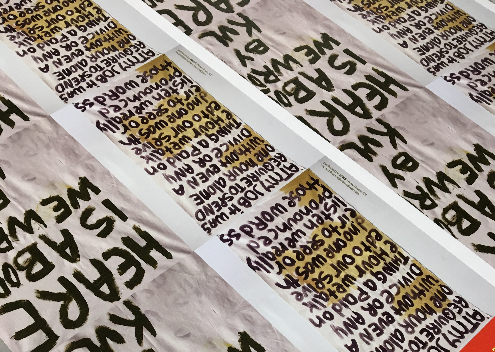

For the final week of Folk Festival: Infinite Gohyang, we will hold a celebration of words. Out of all of the festival’s events, we aim for this one to be accessible to the widest range of people to participate not just as audience, but as artists. One of the main messages we have throughout the festival is that anyone can make art—anyone can hold a vision, can be a site of change. People create their own designs in everything from paintings to the structure of their own lives. This is especially evident in words. In the way we speak, in the concepts we express, we prove that we have things to say.
How we will show this through the festival is by discovering that the folk monster also communicates through words. We will encourage people to write from the monster’s point of view, to imagine for example that they are coming across the monster’s diary or letters to other monsters far away. We will have an open mic for poetry as well as tables for people to swap zines and books. This is a collaboration with the New Haven Zine Scene, an emerging collective of zine-makers, collage artists, and art book makers in the community. We will display words in non-traditional mediums, such as: printed on clothing, painted on canvas, and recorded as voice memos. If you would like to participate or learn more about the Zine Scene, please reach out to jisusheen[at]gmail.com or message @gogumamathoughts on Instagram. We have materials and tools, and would love to help anyone make books (books that are just books, books that are clothes, books that are paintings, endless possibilities).

❁Covers for Kulimushi Barongozi's book "Heare is a Book We Wrote by Kuli," published by Second Floor Hardware School.
As part of the community activities of this festival, we will also have a station to write letters to youth in local detention centers. There is a collective of local letter writers who make, collect, and distribute these letters every few months through the detention centers’ English classes. Over time they have noticed and encouraged the value of variety in these letters. Here is a situation where the unique writing style that naturally exists in each person can really do something special.
contact: jisusheen[at]gmail.com